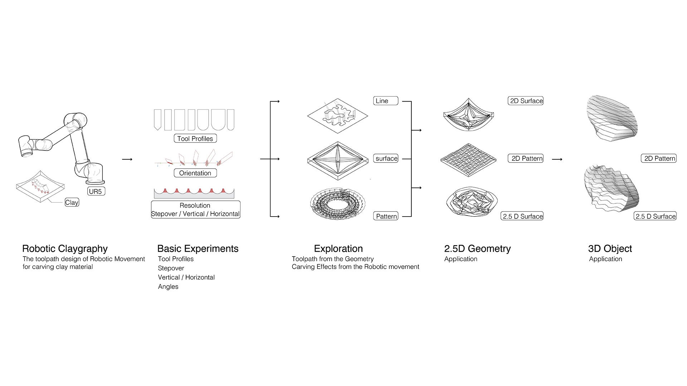
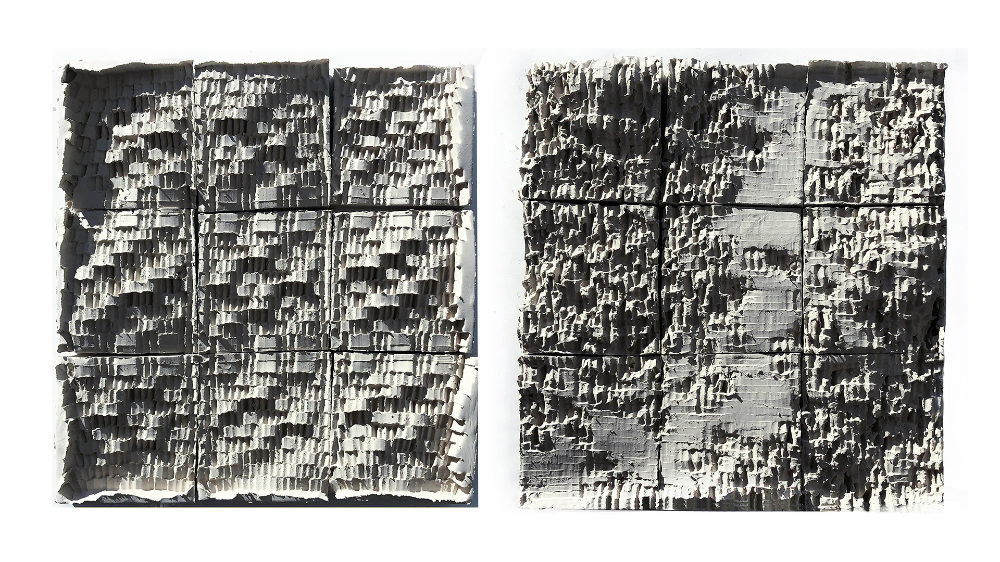

-
Robotic
Claygraphy
-
This thesis presents an exploration of sculpting textures and patterns on clay models using complex gestures of robotic motion. The process translates human sculpting skills into robotics. We mount custom tools as end effectors to efficiently subtract clay material and further fabricate geometries in high resolution.
-
Role
Master's Thesis
Timeline
3 Months
Completed
09/2019
Credits
ETH Zürich, MAS DFAB
Tools
Rhinoceros 3D/Grasshopper, python, Universal Robot 10
Role & Activities
I conducted a series of robotic sculpting behavior experiments from human sculpting gestures. Find parametric data in basic experiments to program the robotic arm. In the following exploration, given multiple types of meshes as input, the design expression is decomposed into a set of initial toolpaths. Modify key parameters that affect the visual appearance of the surface finish of sculpted clay.
-
The fabricating parameters were discovered through a series of basic experiments. After experiments, we generate toolpaths based on the curvature of the target geometry to sculpt the clay material. Through this workflow, we made different sculpting effects using robot motion.
-
Robotic Claygraphy
Overview -
Toolpaths are generated from a continuous coordinate system. The carving process is limited by the tool orientation and the configuration of 6 joints on the robotic arm. It is different from the constraints of pick and place robot control.
-
Generate the Whole Tool-Path
-
We apply this fabrication technique to prototype 2.5D surfaces and 3D objects. It further shows the potential for subtractive robotic fabrication on clay materials.
-
2.5D Surface
-
2.5D Surface
Predict Carving Effects
-
3D Object
-
Welcome to watch the video below to get more details and fabrication proceese.
-
MAS ETH DFAB - Thesis design
Robotic Claygraphy